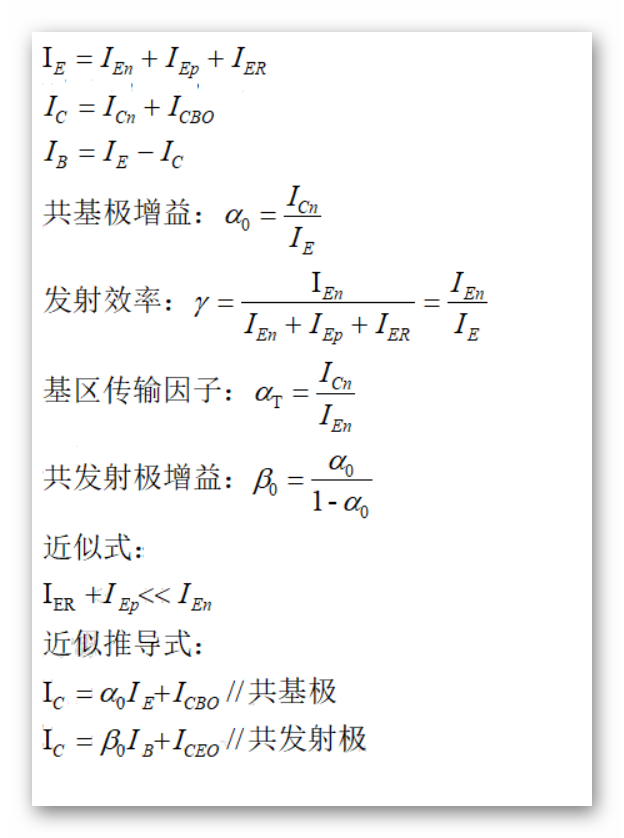

| 半导体器件 | |
目录： 第一节--半导体基础 第二节--二极管 第三节--晶体管 第四节--MOS电容 第五节--MOS管 第六节--纳米器件 第七节--结型场效应管 返回页： |
双极型晶体管（bipolar junction transistor) 1.基本结构和工作原理 双极型晶体管就是有两个反向的PN结组成的器件，分为PNP和NPN两种，显然由于PN结有两种状态而 两个PN结又具有不同的结构，所以BJT有四种工作状态。 （1）S（源极）和B正向；D（漏极）和B反向 （2）S和B正向；D和B反向 （3）S和B反向；D和B正向 （4）S和B反向；D和B反向 具体的能带图结构就是PN结的正反向的组合，但是考虑耗尽区的宽度和准中性区的条件的成立。 基本参数：
 上面的公式只是基于电路性质进行的性能描述，对于电路的计算具有重要意义，记住即可。 2.I-V特性 作为半导体器件，I-V特性永远是第一位要了解的特性，后面几乎所有的性质都要从IV特性出发。 （1） 正向有源放大模式下的少子分布 作为经典的少子器件，BJT的电流受到少子分布的影响，所以了解少子的分布是必须的。 原理就是根据准中性基区没有电场，无电流项，根据基区的电离连续性方程即可得到基区少子分布，其 他两个N区的少子的分布也是由准中性区得到，具体的图像就是将PN结正反向组合在一起，注意在反向结处少子为零。 其他的模式下的少子分布则类似的组合就行，注意S掺杂浓度高，少子在准中性区的浓度低。 （2）理想BJT的电流 正向有源放大模式下的理想电流的决定因素：
|